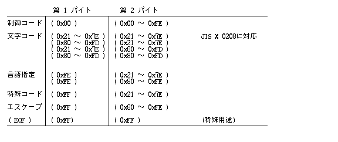
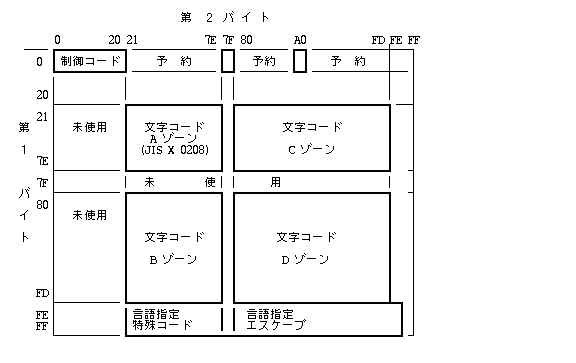

Стандарт TRON Code розроблено для уніфікованого збереження та обробки тексту будь-якою мовою світу (японська, китайська, корейська, кирилична, латиниця, арабська, грецька, тайська тощо) у єдиному багатомовній кодовій площині без втрати інформації.
Кожна мовна група ділиться на окремі кодові площини або набори символів (Character Sets / Script). Для перемикання кодових площин використовуються керуючі коди перемикання скриптів (Language Switch Codes).
Один і той самий символьний код може відображатися різними стилями гарнітур (Mincho, Gothic тощо), але в базах даних і при пошуку тексту він залишається ідентичним символом TRON Code.
TRON Code враховує сумісність із 7-бітними та 8-бітними кодовими таблицями JIS X 0201. Керуючі коди C0 (0x00..0x1F) та C1 виділені для системних управляючих символів.
У BTRON усі японські та східноазійські символи представлені двобайтовими кодами (16 біт), що виключає потребу у частому перемиканні між 1-байтовими та 2-байтовими режимами. Поняття "напівширинних" (Half-width) та "повноширинних" (Full-width) символів відсутнє — замість цього застосовуються відповідні текстові вкладки (Text Fusen).
Японський кодовий шар TRON Code повністю включає в себе таблицю JIS X 0208 (6877 символів канджі та кани) зі збереженням їх оригінальних позицій у 1-му блоці (Зона A).
Двобайтова кодова зона розділена на 4 великі блоки (Зони A, B, C, D):


Усі 2-байтові коди з першим байтом 0x00 є керуючими символами:
| Код (Hex) | Назва | Призначення та дія |
|---|---|---|
| (0x0000) | TNULL (NUL) | Символ завершення текстового рядка u TRON Code (null-terminator). |
| (0x0009) | Табуляція (TAB) | Перехід до наступної позиції табуляції або наступного поля. |
| (0x000A) | Новий абзац (NL) | Символ завершення абзацу та переходу на новий абзац. |
| (0x000B) | Нова колонка (Page/Column) | Перехід до наступної текстової колонки. |
| (0x000C) | Нова сторінка (Form Feed) | Перехід на нову сторінку документа. |
| (0x000D) | Новий рядок (CR/LF) | Перехід на новий рядок у межах поточного абзацу або поля. |
| (0x0020) | Роздільник (SP) | Пробіл / роздільник слів чи фраз. |
Діапазони 0xFE21..0xFE7E та 0xFE80..0xFEFE використовуються для перемикання активної
кодової площини мови (кирилиця, латиниця, арабська, грецька тощо).
94 спеціальних символи, що вставляються у текст для службових позначок.
Використовуються як роздільники та маркери початку вставлених у текст функціональних вкладок (Fusen / Вкладки).
0xFFFF (-1 у цілочисельному вигляді) позначає кінець файлу або потоку (EOF).
0x2121
0x00A0
0x0020